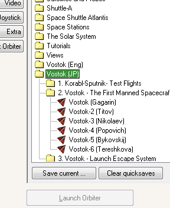

Vostok MOD 日本語ファイル
Orbiter2010のVostok MODで使える日本語操作ガイドを作ってみました。
v1.0、v1.1の両方で使用できます。
ダウンロード
インストール
ダウンロードしたファイルを解凍して、中身をOrbiterフォルダに上書き。
日本語操作ガイドの使い方
Vostok (JP)フォルダのシナリオでゲームを開始する。

ゲーム内でAltキーを押しながらF1キーを押す。
もしくは、F4キーを押してHelpボタンをクリック。
全文検索に対応しており、使いたい機能を検索することができます。
目次とキーワードは使えません。（Orbiter Helpの内容が表示されるため）
左上の非表示ボタンをクリックするとメニューを消すことができます。